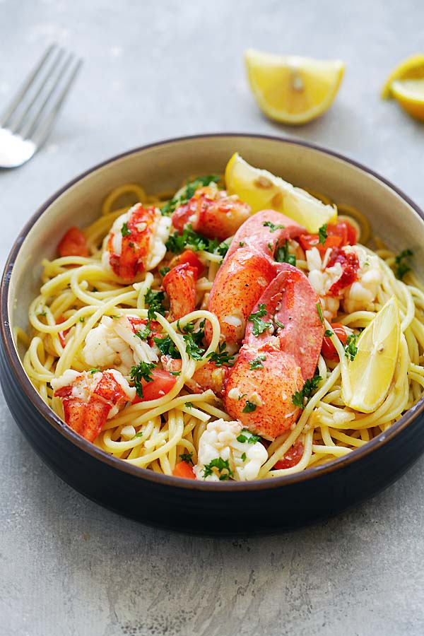

Lobster Pasta

This homemade lobster pasta recipe comes with garlicky butter sauce.
Lobster pasta is one of my favorite pasta recipes. However, eating out at restaurants is
expensive and you get only a few meager pieces of a lobster tail.
Ingredients
- Lobster meat
- Spaghetti
- 2 tbsp olive oil
- 2 tbsp unsalted butter
- 4 garlic cloves
- 1/2 tsp salt
- 3 dashes ground pepper
- 2/3 cup chicken broth
- 2 tbsp Japanese cooking sake
- 1 tbsp mirin
- 1 tbsp chopped parsley
- 1 small tomato cubed
- 1 tbsp lemon juice
- Lemond wedges
- Shaved parmesan
Steps
- Bring a pot of water to boil and cook the lobster, for about 10 minutes.
Drain and extract the meat from the claws and tail. Cut the lobster tail meat into bite-sized pieces.
- Cook the spaghetti per the package instructions. Drain and set aside.
- On medium heat, heat up a skillet with the olive oil and butter. Add the garlic and saute, then add
the lobster meat, follow by salt and black pepper. Add the spaghetti into the skillet, stir to combine
well with the lobster.
- Add the chicken broth, sake and mirin (if using). Toss the spaghetti a few times, until the sauce slightly thickens.
Add the tomatoes, parsley and lemon juice, stir to mix well with the spaghetti. Turn off the heat, transfer the pasta
to two serving platters, garnish with lemon wedges and shaved Parmesan cheese, if using. Squeeze the lemon juice on
the pasta before eating.